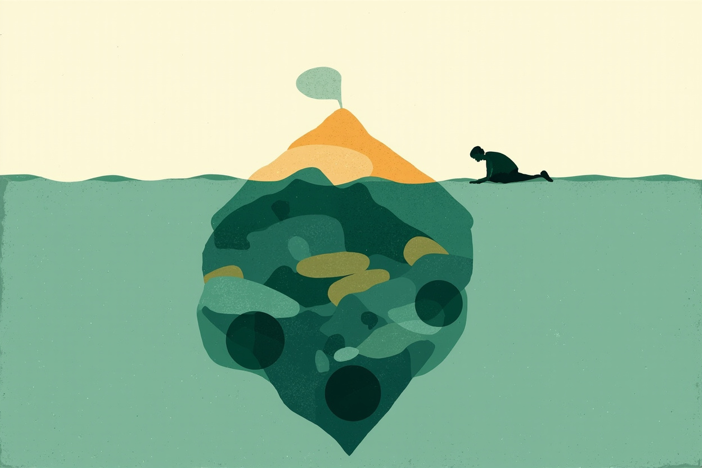
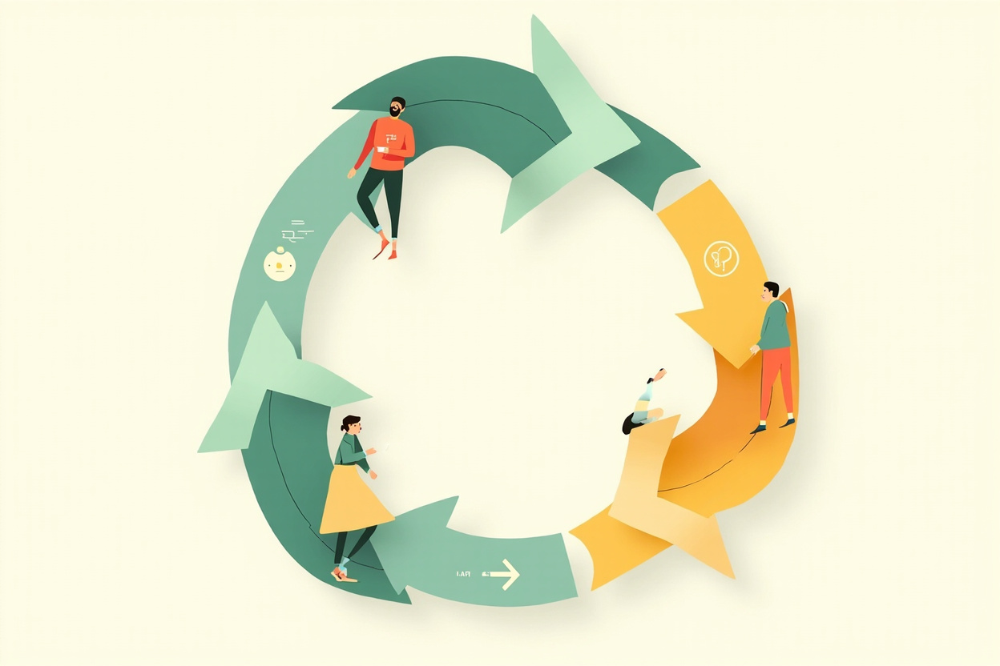

⚠️ 免责声明：本章为家庭教育通识科普，仅供家庭教育参考，不构成医疗、心理或法律建议。每个孩子的年龄、气质与家庭环境差异很大，文中方法需要个体化调整；对孩子的情绪、行为或发育疑虑（如持续情绪低落、拒学、社交退缩），请及时到正规医疗机构儿童保健科、发育行为儿科或精神心理科，或正规心理咨询机构寻求专业评估，本站只科普一般知识，不做任何诊断。本站不推荐任何具体机构、课程或商品，无商业合作、无带货链接。本章部分方法出自畅销书体系（P.E.T.、《如何说孩子才会听》、非暴力沟通等），已按证据等级如实标注。如需情绪支持，可拨打全国 12356 心理援助热线。
本章目标（约25分钟）：学完你能——①用"心理抗拒"和"超限效应"解释为什么同一句话说三遍反而更没用；②掌握积极倾听与反映式回应的三步动作，把"听七说三"变成肌肉记忆；③把"你怎么总是……"翻译成"我-信息"，用描述代替评判；④背下冲突当下的四步流程框（停-听-描述-选择），在情绪高点也能执行；⑤用"给选择"替代命令，并按 0-3 / 3-6 / 6-12 / 12-18 四个年龄段调整沟通方式；⑥理解"父母道歉不失权威"，掌握冲突后修复的动作；⑦识别沟通长期失效的预警信号，知道什么时候该寻求家庭心理咨询等专业帮助。
怎么用本章：沟通技术是练出来的，不是读出来的——建议本周只挑一个动作（比如"反映式回应"或"我-信息"）刻意练习，练顺了再换下一个。第四节的方法框建议截图存手机，冲突现场翻出来照着做。本章与第5章（情绪教练）、第12章（规则与界限）、第13章（青春期）互为工具包：情绪接不住时沟通必然失败，规则不清时沟通没有边界。
一、为什么说了不听：唠叨失效的三个机制
心理抗拒、超限效应、权力落差——先懂机制，再学话术
"我数到三"的夜晚：沟通失效的标准剧本（示例）
晚上七点半（示例）：妈妈第一次说"去写作业"，八岁的朵朵嗯了一声没动；第二次说"再不去就没时间了"，朵朵继续摆弄手里的贴纸；第三次提高音量"我说了几遍了！"，朵朵哭起来："你烦死了！"妈妈也炸了："我烦？我不管你了！"——作业八点才开始，两人在眼泪里互相消耗。这个剧本几乎所有家庭都上演过，而且有个残酷的规律：同一句话说得越多，每一遍的效力越弱，直到语言本身报废。
多数家长把失效归因于"这孩子就是不听"，但机制层面至少有三个更准确的原因：心理抗拒——人（包括孩子）感知到自己的自由被威胁时，会本能地反抗以夺回控制感，命令越强硬，抗拒越激烈，哪怕孩子本来打算去做；超限效应——刺激过多、过强或持续时间过久，会引起心理极不耐烦甚至逆向反弹，这就是"说第三遍时孩子已经听不见内容，只听见噪音"；权力落差——家长习惯用身份压人（"我是你妈你就得听"），孩子表面服从内心对抗，或者干脆关闭通道。三个机制指向同一个结论：沟通失效通常不是音量问题，而是结构问题——是"谁在说、怎么说、说之前有没有先听"的结构出了问题。
沟通的基本盘：关系先于内容，联结先于纠正
第二个必须先立住的原则：孩子听谁的，取决于他跟谁联结得好。发展研究与社会神经科学的共识方向是：孩子对信息的接受度，高度依赖于传递信息的关系质量——感到被理解、被尊重的孩子，才愿意把家长的话"下载"进自己的系统；感到被否定、被控制的孩子，第一反应是防御而不是接收。这就是很多家庭教育书反复强调的"先联结，后纠正"（connection before correction）：情绪对抗的当下，任何正确的道理都是无效输入，先把关系通道接通，内容才送得进去。
WHO 在青少年心理健康的官方文件中也把支持性的家庭关系列为青少年心理健康最重要的保护因素之一——沟通技术不只是"让孩子听话"的工具，它本身就是关系的建筑材料：每一次好好听、好好说，都在往情感账户里存款；每一次吼叫、翻旧账、贴标签，都在取款。本章后面所有技术（倾听、我-信息、给选择、修复）都建立在这个前提上：目标是双向的理解与合作，不是单方的服从。如果你的诉求是"怎么说他才会照办"，本章会不断把你纠正回"怎么说他才会愿意跟你说话"——后者才是前者的可持续版本。
二、先听后说：积极倾听与反映式回应
听七说三、三步反映、开门语——让孩子把话说完的技术
积极倾听：听的不只是字，还有字下面的情绪
人本主义心理学家卡尔·罗杰斯提出、托马斯·戈登在"父母效能训练"（P.E.T.）中普及的积极倾听（active listening），核心主张是：听孩子说话时，你要接收的不只是字面内容，还有内容下面的感受与需要，并且把你接收到的东西反馈给孩子确认。孩子说"我再也不想跟小凯玩了"，字面是一个决定，底下可能是委屈（"他今天没等我"）、愤怒（"他把我的秘密说出去了"）或失落（"他跟别人好了"）——积极倾听的任务是先弄清底下是什么，而不是急着回应字面。
积极倾听的三步动作：第一步，复述内容——"你是说小凯今天中午没等你一起吃饭？"（确认事实，也让孩子知道你认真听了）；第二步，命名情绪——"等了你一中午，你肯定又失落又生气。"（帮孩子把混沌的感受变成可以言说的词——这正是第5章情绪教练的核心技术，命名即调节）；第三步，请求确认——"是这样吗？还是还有别的？"（把解释权留给孩子，猜错了让他纠正你）。三步的关键姿态是不评判、不急着解决：孩子说一半你就跳出来"那你以后别理他""你也该反思自己"，等于宣判这次倾诉失败，下次他就不说了。
听七说三：开门语、沉默与"嗯"的技术含量

插画 · AI 生成 — 积极倾听：孩子说出的话只是水面上的部分
沟通比例上有个朴素的经验法则：听七说三——多数家长的默认配置正好相反。让孩子多说的具体技术：开门语（door openers）——用不预设答案的邀请打开话题："今天有什么好玩的事吗？""看起来你有点不高兴，想说的时候我都在。"（注意：审问式开场"今天考了什么？老师批评你没有？"是关门语）；沉默——孩子说到一半停了，忍住三秒别接话，沉默常常是他组织下一句的时间，急着填空会打断他的思路；最小回应——"嗯""然后呢？""原来是这样"，这些看似敷衍的语气词，功能是告诉对方"我在跟，请继续"，比插话点评高明得多。
还有两个时机技巧。其一，并肩时刻好于面对面：很多孩子（尤其男孩与青春期孩子）在并肩做事时更容易开口——一起走路、一起洗碗、开车接送的路上，没有目光对视的压力，话反而出来了；"我们谈谈"式的正襟危坐，常常是谈话还没开始就已经失败。其二，睡前是黄金档：孩子躺下后光线暗、任务少、防御低，很多白天说不出口的话会在"再讲一个故事"之后冒出来——预留十分钟不催睡的聊天窗口，是很多家庭最划算的沟通投资。
三、描述代替评判："我-信息"的翻译术
把"你怎么总是这么磨蹭"翻译成对方听得进去的话
"你-信息"与"我-信息"：一句话的两种命运
观察日常亲子对话，会发现大量句子是"你-信息"：以"你"开头、以评判收尾——"你怎么总是磨磨蹭蹭""你就是不听话""你太让我失望了"。"你-信息"的结构性问题：它描述的不是事实，而是对孩子的人格判决（"总是""就是"），接收方的本能反应是辩护、反击或关闭，而不是反思——这又回到第一节的心理抗拒机制。与之相对的"我-信息"（I-message）由戈登在 P.E.T. 中系统提出，结构是：行为（客观描述）+ 影响（对我造成了什么）+ 感受（我因此感觉如何）——"玩具还在地上（行为），我走过去差点踩到摔倒（影响），我吓了一跳也有点着急（感受）。"
同一个不满，两种说法的命运完全不同："你怎么又乱扔玩具！说了多少遍！"引发的是对抗或屏蔽；"我差点被积木绊倒，吓了一跳"引发的更可能是愧疚驱动的补救（"我来收"）。"我-信息"有效的机制有三层：它不含人格攻击，孩子的防御不必启动；它提供真实信息（你的感受与处境），孩子学到的是行为对他人有后果，这是共情发展的原料；它示范了一种成熟的情绪表达——你用"我-信息"对孩子说话，就是在教他将来如何对别人说话。注意"我-信息"不是把"你"字换成"我"字就完事："我觉得你很不自觉"仍然是披着"我"皮的评判；合格的标准是句子里只有可观察的行为、具体的影响、真实的情绪，没有标签。
翻译练习：常见"你-信息"对照表
| 场景 | 评判式"你-信息"（少用） | 描述式"我-信息"（推荐） |
|---|
| 出门磨蹭 | "你怎么总是磨磨蹭蹭！" | "还有十分钟就迟到了，我有点着急。你穿鞋、我拿包，咱们分头行动。" |
| 打断了大人说话 | "你就不能让人省点心？" | "我正在打一个重要电话，被打断会忘事。给我两分钟，打完马上听你说。" |
| 答应的事没做 | "你就是说话不算数！" | "说好的饭后收碗没收到，我下班回来还要做，觉得很累。今晚需要你把这件事补上。" |
| 玩得晚归 | "你还知道回来？！" | "过了约定的时间你没到家，我又担心又生气。先说说发生了什么，再谈下次怎么约。" |
| 对弟妹动手 | "你真是越来越不像话！" | "我看到你推了妹妹，她哭了。我担心她会受伤。生气可以用嘴说，手是用来保护的。" |
使用时的三个提醒：其一，先平静自己再开口——怒火冲头时说出来的一定是"你-信息"，深呼吸十秒（第5章家长版情绪调节）再组织句子；其二，一次只说一件事——"我-信息"最忌捆绑销售（"你今天没收玩具，上周还顶嘴，上个月还……"），翻旧账会把一次有效表达变成一场人格清算；其三，说完要留出回应的空——"我-信息"是对话的开始不是结束，说完等孩子接话，他若有委屈，切回第二节的倾听三步。
四、冲突当下：四步流程框
情绪高点也能照着做的最小流程：停—听—描述—选择
方法框：冲突当下四步（停—听—描述—选择）
第一步 · 停：感觉要吼了，先停——深呼吸、离开现场十秒、喝口水都行。停不是认输，是不让情绪脑接管对话（孩子的情绪脑同样在线，两个失控的大脑谈不出结果）。
第二步 · 听：请孩子先说，用倾听三步接住——复述内容、命名情绪、请求确认："你是说……所以你特别……，对吗？"这一步的目标不是同意他，而是让他确认"我被听见了"。
第三步 · 描述：用"我-信息"说你的立场：行为+影响+感受，不贴标签、不翻旧账、一次只说这一件事。
第四步 · 选择：把解决方案变成共同任务——"你看怎么办？"先让孩子提案；给两个你都能接受的选项让他选；谈不拢时约定试行方案与复盘时间。最后确认："那我们说定了？"
整合 P.E.T. 积极倾听、"我-信息"与正面管教"共同解决问题"思路的流程化整理；四步顺序不可颠倒——先处理情绪，再处理事情

插画 · AI 生成 — 冲突当下四步：停—听—描述—选择
四步的底层逻辑值得说透：停解决的是生理问题（情绪激活状态下，前额叶的理性功能被压制——第1章、第5章讲过的情绪脑与理智脑，大人孩子同理）；听解决的是心理抗拒问题（被听见的孩子不需要用对抗来争取话语权）；描述解决的是信息传递问题（评判让人防御，事实让人思考）；选择解决的是自主感问题（第10章：自己参与制定的方案，执行意愿天然更高）。四步走完通常需要十到二十分钟，比吼完再冷战三小时便宜得多。
非暴力沟通四要素：一个可选的加强版
马歇尔·罗森堡的非暴力沟通（NVC）提供了结构更完整的表达框架，四要素为：观察（observing，不带评论地描述事实："这周有三天你十点还没睡"）→ 感受（feeling："我担心"）→ 需要（need："因为你的睡眠对你长身体太重要"）→ 请求（request："你愿意这周试试九点半上床吗？"）。它与"我-信息"高度同构，多出的"需要"一环让表达更有解释力，"请求"与"命令"的区分也关键：请求意味着对方可以说"不"，然后我们协商；不能说"不"的，只是包装过的命令，孩子分得出来。
证据等级如实说明：NVC 作为畅销书体系，其核心成分（描述性反馈、情绪命名、请求而非命令）与实证支持的沟通研究方向一致，但"完整四步 NVC 训练改善亲子关系"的高质量对照研究有限——建议把它当作表达的训练轮，而不是宗教。日常用起来甚至可以压缩成一句："我看到……（事实），我感到……（情绪），因为我需要/看重……（原因），你愿意……吗？（请求）"。对孩子（尤其低龄）则再简化：事实+感受+一个可执行的请求，足够。
五、给选择而非命令
同一件事，命令引发对抗，选择引发执行——自主感在对话层的落地
选择的心理机制与三种给法
第10章讲过自主需要，它在对话层面的直接应用就是：能让孩子选的事，就不要下命令。机制还是心理抗拒——命令威胁自由感，触发对抗；选择则把"是否做"的对抗，转化为"怎么做"的合作，孩子执行自己选的方案时，阻力天然小得多。三种给法：二选一（幼儿主力："现在洗澡还是五分钟后洗？"——注意两个选项都是你能接受的，别问"洗不洗"）；有限菜单（学龄："周末大扫除，你认领擦桌子还是拖地？"）；开放协商（青春期："这件事你自己打算怎么安排？需要我做什么？"——选项由孩子生成，你把关底线）。
三条边界要清楚：安全与健康底线不给选择（"坐车必须系安全带，这个不商量"——温柔地说，坚定地守，第12章的规则框架）；选择要有真实后果的尊重（孩子选了"五分钟后洗"，五分钟后就去执行，别选完了你又说"还是现在洗吧"——毁约一次，选择工具报废）；别用选择伪装命令（"你觉得现在写作业好不好？"——这不是选择，是钓鱼，孩子的"不好"会让你翻脸）。此外，对确实无法给选择的时刻（赶时间、公共场合），坦诚说明比强行给假选项好："今天赶时间没得选，抱你上车。周末你想去哪玩，你说了算。"——补偿性的自主权，能修复被挤压的控制感。
六、分龄沟通：四个年龄段各说各的话
0-3 旁白与短句、3-6 游戏化、6-12 公平与会议、12-18 少盘问多并肩
0-6 岁：旁白、短句与游戏化
0-3 岁：这个阶段"沟通"的主体是非语言与简单语言——你的语气、表情、回应速度比词句重要得多（第2章"发球与回球"就是沟通的起点）。实操要点：旁白式说话（"妈妈在给你穿袜子，先左脚，再右脚"——把日常动作变成语言输入）；短句+具象（对两岁孩子说"把红色的小汽车放进箱子里"，而不是"你怎么又不好好收拾玩具"）；用身体先于语言（蹲下来平视、牵手、拥抱，再开口）。3-6 岁：语言爆发但抽象能力有限，讲道理基本无效，游戏化是最强的沟通协议——"我们比赛谁先把牙刷出泡泡""让小熊看看你怎么穿鞋"（《游戏力》流派的核心主张，与 AAP"游戏是儿童的语言"口径呼应）；提问要具体到经过（"今天在园里玩的什么游戏？"好于空泛的"今天乖不乖"——后者只能收获"乖"一个字）；这个年龄的"说谎"多为想象与现实未分清，先弄清性质再谈诚实（第4章语言发展有相应口径）。
6-12 岁：公平敏感期与家庭会议
学龄儿童的认知发展让他们开始用"规则与公平"的框架看世界（皮亚杰的具体运算阶段特征，第8章），沟通策略要跟着升级：讲道理开始有效，但必须是双向的道理——你解释规则的理由（"九点半睡是因为你这个年龄需要十小时睡眠，睡够了白天才有精神"），也认真听他的反驳（"可是同学都能玩到十点"——接住，进入协商而不是镇压）；公平感是雷区，尤其多子女家庭，"为什么弟弟可以我不可以"必须有经得起检验的答案（按年龄的能力与责任差异，而不是"因为他是弟弟"）。家庭会议是这个阶段最值得引入的沟通制度：每周固定二十分钟，全家围坐，议程包括本周感谢（每人说一件感谢其他成员的事）、待解决问题（孩子也可以提案题）、下周安排；规则是发言不打断、提案要表决、结果要执行。会议给孩子的是真实的参与权——这正是第10章"参与定规则"的制度化。
另一个高频场景是学习类对话：把"作业写完了吗"的查岗式开场，换成"今天有什么有意思的/烦人的事吗"的生活式开场，学习话题等孩子自己带出来再深入；孩子说"我不想学了"时，先接情绪（"听起来今天挺累/挺挫败的"）再找具体卡点（"是哪一部分让你烦？"），而不是先讲大道理（"现在不学以后怎么办"）——远期后果对学龄儿童的说服力接近于零，具体卡点的解决才能换来下一次开口。
12-18 岁：少盘问、多并肩、尊重隐私
青春期的沟通难度陡增，但成因不是"孩子变坏了"，而是发展任务变了：青少年的核心任务是分离与个体化——从"什么都告诉爸妈的小孩"变成"有自己边界与秘密的准成人"，话变少是这个任务的正常症状而非病。AAP 家长版对青春期沟通的建议方向与此一致：保持通道开放、尊重隐私、避免审问式对话。实操要点：盘问三连（"作业呢？考得怎样？跟谁玩？"）是通道关闭的头号原因，改成分享先行——你先说你自己今天的事（"我们办公室今天出了个大乌龙"），自我暴露换取自我暴露；并肩场景大于面对面（第二节讲过：车里、球场上、一起做饭时的对话密度，远高于"我们谈谈"）；隐私是底线——不偷看手机与日记，担心安全就正面说"我注意到你最近睡得晚、话也少，我有点担心，你愿意说的时候我随时在"，把担心的权利和追问的克制同时表达。
还要接受一个现实：青春期的影响力从"说服"转向"在场"。你说十句他驳八句，但你的价值观、你处理情绪的方式、你对他朋友的尊重，都在被默默下载。冲突时记住第一节的心理抗拒：赢了争论往往输了关系；很多话题（发型、偶像、房间乱）不值得动用关系资本去赢。守住安全与底线（作息健康、学业不掉线、危险行为），其余的"看不惯"，是你要修的行。详细展开见第13章青春期专章。
七、冲突之后：修复比不吵更重要
父母道歉不失权威；破裂-修复循环本身就是教育
没有不吼的父母，只有会修复的父母
先把预期调对：不存在从不失控的家长。睡眠不足、工作压力、孩子精准踩雷，任何家庭都有吼完的那一晚。发展研究的口径给了家长一个宽慰而深刻的框架：亲子互动中，完美的回应并不存在也不需要——重要的是"破裂与修复"的循环：关系出现裂痕（吼了、误解了、失约了），然后被主动修复（道歉、解释、补救）。经历过"破裂-修复"完整循环的孩子学到的东西，比从未见过破裂的孩子更多：冲突不可怕、关系可以修复、犯错的人可以负责——这是未来所有人际关系的底层模板。
父母道歉的正确姿势：具体、不甩锅、不索取原谅。"昨天晚上我对你吼了，是我不对。我当时工作压力大，但那是我的事，不该冲你发火。吓到你了，对不起。"——三个要点：承认具体行为（吼了你）而不是抽象认错（"行了吧对不起"）；解释原因但不推责（"都是因为你气我"是甩锅式道歉，等于二次伤害）；不要求孩子立刻原谅（"我都道歉了你还要怎样"——修复的节奏归被伤害的一方）。至于"道歉会不会失去权威"——恰恰相反：孩子对权威的信任，建立在"这个人讲道理、能认错"上；死不认错的家长，失去的才是真正的权威。
修复的工具箱：道歉之外的四种动作
不是每次修复都需要正式的道歉谈话，按严重程度分级：轻度（语气冲了、不耐烦了）——用肢体与语气修复：摸摸头、递杯水、"刚才妈妈语气不好，重新说一遍：……"；中度（吼了、冤枉了）——正式口头修复：四要素（承认行为+解释不甩锅+表达在乎+询问感受"你当时什么感觉？"），并让孩子说完；较重（当众羞辱、翻旧账伤人、失约大事）——加上补救行动：当面澄清、兑现承诺并加倍守约一段时间，用行动重建信任；反复性破裂（同一件事总是吼）——修复之外要改结构：这件事的规则、环境或分工需要重新设计（总是因为写作业吼，说明写作业的安排本身有问题，回到第6章与第10章找结构性解法），否则道歉会变成周期性表演。
最后是修复的预防层：给关系做日常存款，冲突时的取款才不会透支。存款动作便宜得很——每天十分钟专属陪伴（无手机，第9章）、睡前聊天窗口（第二节）、每周一次只属于你们俩的活动（散步、打球、一起烘焙）、以及最朴素的一条：多描述少评判的日常语言习惯（第三节）。关系账户余额充足的家庭，偶发冲突是浪花；余额见底的家庭，一句重话就是雪崩。
修复还有两个容易被忽略的细节。其一，修复要趁早，但别抢跑：吼完的当天是修复的黄金窗口，拖到第二天，孩子已经用一整夜把"妈妈不爱我了"的故事编完了；但如果孩子情绪还在浪尖上，先给他冷静的时间（"我们都缓一缓，十分钟后我来找你"），修复谈话本身也需要双方都能听进去的状态。其二，让孩子也练习修复：孩子吼了你、说了伤人的话，等双方平静后，请他补一个道歉或补救动作——不是罚他"说对不起"三个字交差，而是走完"承认行为+表达在乎+做点补救"的完整循环（"你刚才说我讨厌，我很伤心。你知道我不是那个意思对吗？那你愿意做点什么让我们俩都好受一点？"）。孩子从小学会的不只是道歉的句式，而是对关系负责的能力——这项能力在他未来的友谊、婚恋与合作中，比任何一门才艺都值钱。同胞冲突同理：与其当法官断案，不如带着两个孩子走一遍四步流程框，让"修复"成为家里处理冲突的公共语言。
八、当沟通长期失效：预警信号与专业求助
本章只负责"识别信号+指路"，评估与干预是专业机构的事
识别信号：什么时候说明"不是技术问题了"
沟通技术能解决的大多是"方法问题"，但有些情况提示背后有更深的因素，值得专业评估。以下信号供家长对照（识别信号，不是诊断标准——诊断只能由专业机构做出）：孩子方面——持续两周以上的情绪低落或易怒，对原本喜欢的事失去兴趣；拒绝上学或频繁躯体化（一到上学就头痛肚子痛，检查无器质性问题）；社交明显退缩，把自己长期锁在房间；提及活着没意思一类的话（任何自伤自杀的言语都必须严肃对待，立即寻求专业帮助）；关系方面——家庭冲突每天高频爆发且任何方法都无效；亲子之间只剩对抗或只剩沉默；家长自己出现持续的情绪耗竭、失控感。家庭方面——夫妻冲突长期激烈或冷战，孩子明显受影响；经历重大变故（离异、丧亲、搬迁、校园欺凌）后沟通持续恶化。
求助路径按顺序：先找学校心理老师沟通情况（教育部等十七部门《学生心理健康专项行动计划》建立了校内预警与家校协同机制，学校是正规入口之一）；再到正规医院——儿童保健科、发育行为儿科、精神心理科做专业评估；评估后如需持续支持，选择有资质的心理咨询机构与咨询师（家庭治疗对亲子沟通问题的适用性较高）。全国 12356 心理援助热线提供情绪支持与求助指引；情况紧急（明确自伤风险）时直接前往医院急诊或拨打急救电话。请记住本站的边界：科普文章不能替代评估，及时求助不是失败，恰恰是负责任的养育。
九、本章自测
能用大白话讲出来，才算真的学会了
谣言粉碎：关于亲子沟通的四个流行说法
说法一："沟通就是把道理讲清楚，讲明白了孩子自然听。"——把沟通误当成了演讲。讲道理只是"说"的一半，且是效力最低的一半：情绪对抗时道理是无效输入（第一节），孩子对信息的接受度取决于关系质量而非道理的正确性。真正的沟通是双向的——先听（第二节）、描述而不评判（第三节）、给选择而不是命令（第五节），道理只在通道打开之后才有机会进场。说法二："顶嘴就是挑战权威，必须压下去。"——方向反了。顶嘴说明孩子还在用语言跟你交锋（比沉默关闭好得多），其中往往有真实的诉求与信息；压下去得到的是表面服从与地下抵抗，或者干脆通道关闭。更好的做法是把顶嘴转化为协商："你不同意？说出你的理由，有道理我们就改。"——这正是第六节家庭会议与第10章权威型教养的操作。说法三："青春期孩子天然无话可说，忍到十八岁就好了。"——不成立。青春期话少是分离个体化的正常表现，但"通道"可以保持：WHO 口径中支持性家庭关系是青少年心理健康的保护因素，AAP 家长版给出的正是保持通道开放、尊重隐私、少盘问多并肩的方法（第六节）——被动等待只会把"话少"拖成"失联"。说法四："对孩子太好、跟孩子道歉，家长会失去权威。"——恰恰相反。权威的可信版本建立在"讲道理、能认错、守承诺"上；破裂-修复循环教会孩子冲突可解、错误可担（第七节），而拒不认错换来的是恐惧或轻蔑，都不是权威。顺带说明：温和不等于纵容——本章全部技术都与清晰坚定的规则并存（第12章），对行为有要求、对关系有温度，正是权威型教养的两条腿。
📋 理解性自测（讲给朋友听试试）
- 唠叨失效的三个机制是什么？各自怎么运作？
- "先联结后纠正"为什么是本章所有技术的前提？WHO 把什么列为青少年心理健康的保护因素？
- 积极倾听的三步动作是什么？每一步的功能是什么？
- 什么是开门语、沉默三秒、最小回应？"今天考了什么"为什么是关门语？
- 并肩时刻与睡前黄金档分别利用了沟通的什么特点？
- "你-信息"与"我-信息"的结构区别是什么？"我-信息"的三要素是什么？
- 为什么"我觉得你很不自觉"仍然是评判？合格的"我-信息"标准是什么？
- 把"你怎么又玩手机"翻译成一条合格的"我-信息"。
- 使用"我-信息"的三个提醒是什么？为什么最忌捆绑翻旧账？
- 冲突当下四步是什么？每一步分别解决什么问题（生理/抗拒/信息/自主）？
- 非暴力沟通四要素是什么？"请求"与"命令"的分界线在哪里？
- NVC 的证据等级应如何如实看待？
- 给选择的三种给法分别适用什么年龄？三条边界是什么？
- 0-3 岁沟通为什么"身体先于语言"？3-6 岁的最强沟通协议是什么？
- 6-12 岁为什么是公平敏感期？家庭会议的规则与议程是什么？
- 青春期盘问三连为什么关闭通道？"分享先行"的逻辑是什么？
- 青春期家长影响力为什么从"说服"转向"在场"？哪些话题不值得赢？
- "破裂-修复循环"让孩子学到的三样东西是什么？
- 父母道歉的四要素是什么？甩锅式道歉错在哪里？
- 修复动作按严重程度分四级，各是什么？反复性破裂为什么必须改结构？
- 哪些信号提示需要专业评估？求助路径的顺序是什么？12356 是什么？
📌 本章要点速览：唠叨失效的三个机制：心理抗拒（自由被威胁就反抗）、超限效应（说三遍只剩噪音）、权力落差（压出来的服从是假服从）；沟通的基本盘是关系——先联结后纠正，WHO 口径中支持性家庭关系是青少年心理健康的保护因素；积极倾听三步：复述内容→命名情绪→请求确认，不评判不急着解决；听七说三，用开门语、沉默三秒、最小回应让孩子多说；并肩时刻与睡前十分钟是黄金档；"你-信息"是人格判决，"我-信息"=行为+影响+感受，一次只说一件事、不翻旧账；冲突当下四步流程框：停（先平静）—听（倾听三步）—描述（我-信息）—选择（共同方案），顺序不可颠倒；NVC 四要素（观察-感受-需要-请求）是加强版训练轮，请求意味着对方可以说"不"；能给选择就不下命令，但安全底线不商量、选完要作数；分龄沟通：0-3 旁白短句+身体先于语言，3-6 游戏化+问经过不问表现，6-12 讲双向的道理+家庭会议，12-18 少盘问、多并肩、守隐私、分享先行；破裂不可怕，修复才育人——父母道歉要具体、不甩锅、不索原谅，权威建立在能认错上；日常给关系存款：十分钟专属陪伴、睡前聊天、每周专属活动；沟通长期失效并伴随情绪低落、拒学、退缩、自伤言语等信号时，这不是技术问题——经学校心理老师、正规医院儿童心理/精神科寻求专业评估，12356 热线可用，本站只做识别信号与指路。